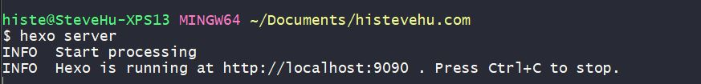

<!DOCTYPE html>
<html>
<head><meta name="generator" content="Hexo 3.8.0">
  <meta charset="utf-8">

  <!-- PACE Progress Bar START -->

  
  <title>如何使用hexo和github pages搭建网站 | HiSteveHu</title>
  <meta name="viewport" content="width=device-width, initial-scale=1, maximum-scale=1">
  
    <meta name="keywords" content="histevehu,stevehu,blog">
  
  
  
  
  <meta name="description" content="简介这里我们将展示如何使用Hexo框架和Github Pages服务构建网站的方法。">
<meta name="keywords" content="教程">
<meta property="og:type" content="article">
<meta property="og:title" content="如何使用Hexo和Github Pages搭建网站">
<meta property="og:url" content="https://histevehu.com/passages/Building-a-Website-with-the-Hexo-Framework-and-Github-Pages/index.html">
<meta property="og:site_name" content="HiSteveHu">
<meta property="og:description" content="简介这里我们将展示如何使用Hexo框架和Github Pages服务构建网站的方法。">
<meta property="og:locale" content="en">
<meta property="og:image" content="https://histevehu.com/passages/Building-a-Website-with-the-Hexo-Framework-and-Github-Pages/img_3.JPG">
<meta property="og:image" content="https://histevehu.com/passages/Building-a-Website-with-the-Hexo-Framework-and-Github-Pages/img_4.JPG">
<meta property="og:image" content="https://histevehu.com/passages/Building-a-Website-with-the-Hexo-Framework-and-Github-Pages/img_1.JPG">
<meta property="og:image" content="https://histevehu.com/passages/Building-a-Website-with-the-Hexo-Framework-and-Github-Pages/img_2.JPG">
<meta property="og:image" content="https://histevehu.com/passages/Building-a-Website-with-the-Hexo-Framework-and-Github-Pages/img_5.JPG">
<meta property="og:updated_time" content="2019-08-13T14:45:13.993Z">
<meta name="twitter:card" content="summary">
<meta name="twitter:title" content="如何使用Hexo和Github Pages搭建网站">
<meta name="twitter:description" content="简介这里我们将展示如何使用Hexo框架和Github Pages服务构建网站的方法。">
<meta name="twitter:image" content="https://histevehu.com/passages/Building-a-Website-with-the-Hexo-Framework-and-Github-Pages/img_3.JPG">
  
  <link rel="icon" href="/logo-1.ico">
  
    <link href="//fonts.googleapis.com/css?family=Source+Code+Pro" rel="stylesheet" type="text/css">
  
  <link href="https://fonts.googleapis.com/css?family=Open+Sans|Montserrat:700" rel="stylesheet" type="text/css">
  <link href="https://fonts.googleapis.com/css?family=Roboto:400,300,300italic,400italic" rel="stylesheet" type="text/css">
  <link href="https://cdn.bootcss.com/font-awesome/4.6.3/css/font-awesome.min.css" rel="stylesheet">
  <style type="text/css">
    @font-face{font-family:futura-pt;src:url(https://use.typekit.net/af/9749f0/00000000000000000001008f/27/l?subset_id=2&fvd=n5) format("woff2");font-weight:500;font-style:normal;}
    @font-face{font-family:futura-pt;src:url(https://use.typekit.net/af/90cf9f/000000000000000000010091/27/l?subset_id=2&fvd=n7) format("woff2");font-weight:500;font-style:normal;}
    @font-face{font-family:futura-pt;src:url(https://use.typekit.net/af/8a5494/000000000000000000013365/27/l?subset_id=2&fvd=n4) format("woff2");font-weight:lighter;font-style:normal;}
    @font-face{font-family:futura-pt;src:url(https://use.typekit.net/af/d337d8/000000000000000000010095/27/l?subset_id=2&fvd=i4) format("woff2");font-weight:400;font-style:italic;}</style>
    
  <link rel="stylesheet" id="athemes-headings-fonts-css" href="//fonts.googleapis.com/css?family=Yanone+Kaffeesatz%3A200%2C300%2C400%2C700&amp;ver=4.6.1" type="text/css" media="all">
  <link rel="stylesheet" href="/css/style.css">

  <script src="https://code.jquery.com/jquery-3.1.1.min.js"></script>

  <!-- Bootstrap core CSS -->
  <link rel="stylesheet" href="https://netdna.bootstrapcdn.com/bootstrap/3.0.2/css/bootstrap.min.css">
  <link rel="stylesheet" href="/css/hiero.css">
  <link rel="stylesheet" href="/css/glyphs.css">
  

  <!-- Custom CSS -->
  <link rel="stylesheet" href="/css/my.css">
  <!-- Google Adsense -->
  
  <script async src="//pagead2.googlesyndication.com/pagead/js/adsbygoogle.js"></script>
  <script>
      (adsbygoogle = window.adsbygoogle || []).push({
          google_ad_client: "",
          enable_page_level_ads: true
      });
  </script>
  
</head>
</html>
<script>
var themeMenus = {};

  themeMenus["/"] = "Home"; 

  themeMenus["/archives"] = "Archives"; 

  themeMenus["/categories"] = "Categories"; 

  themeMenus["/tags"] = "Tags"; 

  themeMenus["/about"] = "About"; 

</script>


  <body data-spy="scroll" data-target="#toc" data-offset="50">


  <header id="allheader" class="site-header" role="banner">
  <div class="clearfix container">
      <div class="site-branding">

          <h1 class="site-title">
            
              <a href="/" title="HiSteveHu" rel="home"> HiSteveHu </a>
            
          </h1>

          
            <div class="site-description">SteveHu&#39;s Personal Official Website</div>
          
            
          <nav id="main-navigation" class="main-navigation" role="navigation">
            <a class="nav-open">Menu</a>
            <a class="nav-close">Close</a>
            <div class="clearfix sf-menu">

              <ul id="main-nav" class="nmenu sf-js-enabled">
                    
                      <li class="menu-item menu-item-type-custom menu-item-object-custom menu-item-home menu-item-1663"> <a class="" href="/">Home</a> </li>
                    
                      <li class="menu-item menu-item-type-custom menu-item-object-custom menu-item-home menu-item-1663"> <a class="" href="/archives">Archives</a> </li>
                    
                      <li class="menu-item menu-item-type-custom menu-item-object-custom menu-item-home menu-item-1663"> <a class="" href="/categories">Categories</a> </li>
                    
                      <li class="menu-item menu-item-type-custom menu-item-object-custom menu-item-home menu-item-1663"> <a class="" href="/tags">Tags</a> </li>
                    
                      <li class="menu-item menu-item-type-custom menu-item-object-custom menu-item-home menu-item-1663"> <a class="" href="/about">About</a> </li>
                    
              </ul>
            </div>
          </nav>


      </div>
  </div>
</header>


  <div id="container">
    <div id="wrap">
            
      <div id="content" class="outer">
        
          <section id="main" style="float:none;"><article id="post-Building-a-Website-with-the-Hexo-Framework-and-Github-Pages" style="width: 66%; float:left;" class="article article-type-post" itemscope="" itemprop="blogPost">
  <div id="articleInner" class="clearfix post-1016 post type-post status-publish format-standard has-post-thumbnail hentry category-template-2 category-uncategorized tag-codex tag-edge-case tag-featured-image tag-image tag-template">
    
    
      <header class="article-header">
        

<h1 class="thumb" itemprop="name">
  如何使用Hexo和Github Pages搭建网站
</h1>


      </header>
    
    <div class="article-meta">
      
	Posted on <a href="/passages/Building-a-Website-with-the-Hexo-Framework-and-Github-Pages/" class="article-date">
	  <time datetime="2018-11-03T16:24:28.000Z" itemprop="datePublished">November 4, 2018</time>
	</a>

      
	<span id="busuanzi_container_page_pv">
	  本文总阅读量<span id="busuanzi_value_page_pv"></span>次
	</span>

    </div>
    <div class="article-entry" itemprop="articleBody">
      
        <h3 id="简介"><a href="#简介" class="headerlink" title="简介"></a><strong>简介</strong></h3><p>这里我们将展示如何使用Hexo框架和Github Pages服务构建网站的方法。</p>
<a id="more"></a>
<blockquote>
<p><strong>Hexo framework</strong></p>
<p>快速，简单，高效的博客框架</p>
<p><a href="https://hexo.io" target="_blank" rel="noopener">Hexo</a></p>
<p><strong>Github Pages 服务</strong></p>
<p><a href="https://pages.github.com/" target="_blank" rel="noopener">Github Pages</a></p>
</blockquote>
<h3 id="步骤"><a href="#步骤" class="headerlink" title="步骤"></a>步骤</h3><h4 id="1-Github-注册"><a href="#1-Github-注册" class="headerlink" title="1. Github 注册"></a>1. Github 注册</h4><p>首先注册Github帐户。 如果你有一个，则可以跳过此步骤。 </p>
<p>然后新建一个仓库作为网站存放仓库。</p>
<p>记住你申请时填写的Github用户名和电子邮件地址，以及新建的仓库名字。 这些将在下面使用。</p>
<h4 id="2-Git-node-js-安装"><a href="#2-Git-node-js-安装" class="headerlink" title="2. Git, node.js 安装"></a>2. Git, node.js 安装</h4><ol>
<li><p>Git</p>
<ol>
<li><p><a href="https://git-scm.com/downloads" target="_blank" rel="noopener">https://git-scm.com/downloads</a></p>
</li>
<li><p><strong>验证安装是否成功：</strong></p>
<p>右键单击桌面，单击“Git Bash”，然后拉出一个类似的命令行窗口，表明Git已成功安装</p>
<p></p>
</li>
<li><p>Git 基本设置</p>
<p>在 <strong>Git</strong> 终端窗口, 输入：</p>
<figure class="highlight plain"><table><tr><td class="gutter"><pre><span class="line">1</span><br><span class="line">2</span><br></pre></td><td class="code"><pre><span class="line">git config --global user.name &quot;Your Name“</span><br><span class="line">git config --global user.email &quot;email@example.com&quot;</span><br></pre></td></tr></table></figure>
<p><em>输入 <strong>Github用户名 </strong>和 <strong>电子邮件地址</strong></em></p>
</li>
</ol>
</li>
<li><p>Node.js</p>
<ol>
<li><p><a href="https://nodejs.org/en/download/" target="_blank" rel="noopener">https://nodejs.org/en/download/</a></p>
</li>
<li><p><strong>验证安装是否成功：</strong></p>
<p><strong>Win+R </strong> &gt; “cmd” &gt; “node –version”, 如果你能看到版本信息，表明Git已成功安装。</p>
<p>    </p>
</li>
</ol>
</li>
</ol>
<h4 id="3-Hexo-安装"><a href="#3-Hexo-安装" class="headerlink" title="3. Hexo 安装"></a>3. Hexo 安装</h4><ol>
<li><p>如果您不是中国用户，可以跳过安装 <strong>Cnpm</strong> 进入第2小步。</p>
<p>Cnpm 是淘宝的镜像服务，在中国的访问速度比 npm 快。 </p>
<p><strong>建议中国用户使用Cnpm 。</strong></p>
<p>打开 Git 终端，输入以下内容进行安装：</p>
<figure class="highlight plain"><table><tr><td class="gutter"><pre><span class="line">1</span><br></pre></td><td class="code"><pre><span class="line">npm install -g cnpm --registry=https://registry.npm.taobao.org</span><br></pre></td></tr></table></figure>
</li>
<li><p>如果你使用 <strong>Cnpm</strong>, 键入:</p>
<figure class="highlight plain"><table><tr><td class="gutter"><pre><span class="line">1</span><br></pre></td><td class="code"><pre><span class="line">cnpm install hexo</span><br></pre></td></tr></table></figure>
<p>如果你不使用 <strong>Cnpm</strong>, 键入:</p>
<figure class="highlight plain"><table><tr><td class="gutter"><pre><span class="line">1</span><br></pre></td><td class="code"><pre><span class="line">npm install hexo</span><br></pre></td></tr></table></figure>
</li>
</ol>
<h4 id="4-基本配置"><a href="#4-基本配置" class="headerlink" title="4. 基本配置"></a>4. 基本配置</h4><ol>
<li><p>创建一个新文件夹作为站点根目录</p>
</li>
<li><p>打开文件夹，右键单击并选择 <strong>Git Bash Here</strong></p>
</li>
<li><p>在 <strong>Git 终端窗口在中</strong>, 输入:</p>
<figure class="highlight plain"><table><tr><td class="gutter"><pre><span class="line">1</span><br></pre></td><td class="code"><pre><span class="line">hexo init</span><br></pre></td></tr></table></figure>
</li>
<li><p>然后我们需要安装插件和主题，这里以hexo-theme-even主题为例，继续输入命令：</p>
<figure class="highlight plain"><table><tr><td class="gutter"><pre><span class="line">1</span><br><span class="line">2</span><br><span class="line">3</span><br></pre></td><td class="code"><pre><span class="line">npm install hexo-renderer-scss --save</span><br><span class="line">npm install hexo-deployer-git --save</span><br><span class="line">git clone https://gitee.com/xiuxiuing/hexo-theme-even themes/even</span><br></pre></td></tr></table></figure>
</li>
<li><p>在<strong>站点根目录</strong>中找到 <strong>_ config.yml</strong> <strong>文件</strong> 并打开它。 将文件的 <strong>deploy</strong> 和<strong>＃URL</strong> 部分的内容更改为：</p>
<figure class="highlight yaml"><table><tr><td class="gutter"><pre><span class="line">1</span><br><span class="line">2</span><br><span class="line">3</span><br><span class="line">4</span><br></pre></td><td class="code"><pre><span class="line"><span class="attr">deploy:</span> </span><br><span class="line"><span class="attr">  type:</span> <span class="string">git</span> </span><br><span class="line"><span class="attr">  repo:</span> <span class="attr">https://github/username/website_repository_name.git</span> </span><br><span class="line"><span class="attr">  branch:</span> <span class="string">master</span></span><br></pre></td></tr></table></figure>
<figure class="highlight yaml"><table><tr><td class="gutter"><pre><span class="line">1</span><br><span class="line">2</span><br><span class="line">3</span><br></pre></td><td class="code"><pre><span class="line"><span class="comment">#URL</span></span><br><span class="line"><span class="attr">url:</span>  <span class="attr">https://username.github.io/website_repository_name</span></span><br><span class="line"><span class="attr">root:</span> <span class="string">/blog</span></span><br></pre></td></tr></table></figure>
<p><strong><em>例:</em></strong> <em>如果你的用户名是“histevehu”并且你的网站Github仓库名是“hi”，那么您的 repo项目和 url项目应为：</em></p>
<figure class="highlight yaml"><table><tr><td class="gutter"><pre><span class="line">1</span><br></pre></td><td class="code"><pre><span class="line"><span class="attr">repo:</span> <span class="attr">https://github/histevehu/hi.git</span></span><br></pre></td></tr></table></figure>
<figure class="highlight yaml"><table><tr><td class="gutter"><pre><span class="line">1</span><br></pre></td><td class="code"><pre><span class="line"><span class="attr">url:</span> <span class="attr">https://histevehu.github.io/hi</span></span><br></pre></td></tr></table></figure>
<p><strong>&lt;!&gt; 注意：冒号后面必须有空格，否则无法正确识别。</strong></p>
</li>
</ol>
<h4 id="5-部署"><a href="#5-部署" class="headerlink" title="5. 部署"></a>5. 部署</h4><ol>
<li><p>在 <strong>Git 终端</strong>, 继续输入：</p>
<figure class="highlight plain"><table><tr><td class="gutter"><pre><span class="line">1</span><br></pre></td><td class="code"><pre><span class="line">hexo clean &amp;&amp; hexo g &amp;&amp; hexo d</span><br></pre></td></tr></table></figure>
</li>
<li><p>部署网站，第一次需要在终端中输入帐户和密码。</p>
</li>
</ol>
<h4 id="6-配置Github页面服务"><a href="#6-配置Github页面服务" class="headerlink" title="6. 配置Github页面服务"></a>6. 配置Github页面服务</h4><ol>
<li><p>进入你的网站的Github仓库页面，转到 <strong>Settings</strong> 选项卡，找到<strong>Github Pages</strong> 项目，启用该服务。</p>
<p></p>
</li>
<li><p>您还可以绑定自定义域名。例如：</p>
<p></p>
</li>
</ol>
<h3 id="技巧"><a href="#技巧" class="headerlink" title="技巧"></a>技巧</h3><h4 id="1-更改主题"><a href="#1-更改主题" class="headerlink" title="1.更改主题"></a>1.更改主题</h4><ol>
<li><p>下载主题，例如从：<a href="https://hexo.io/themes/" target="_blank" rel="noopener">https://hexo.io/themes/</a></p>
</li>
<li><p>提取到网站根目录下的  <strong>themes</strong>文件夹内的新单独子文件夹中用于存放主题。</p>
</li>
<li><p>Configure themes as the theme name in <strong>_config.yml</strong> in the <strong>root directory</strong></p>
<p><strong><em>例：</em></strong> <em>如果你更改成名为 “hiero”的主题，那么你应该在 <strong>网站根目录的 _ config.yml</strong> 中配置 <strong>theme</strong> 项，如下所示：</em></p>
<figure class="highlight yaml"><table><tr><td class="gutter"><pre><span class="line">1</span><br></pre></td><td class="code"><pre><span class="line"><span class="attr">theme:</span> <span class="string">hiero</span></span><br></pre></td></tr></table></figure>
</li>
<li><p>在根目录右键单击，单击“Git Bash”，键入以下内容并执行：</p>
<figure class="highlight plain"><table><tr><td class="gutter"><pre><span class="line">1</span><br></pre></td><td class="code"><pre><span class="line">hexo clean &amp;&amp; hexo g &amp;&amp; hexo d</span><br></pre></td></tr></table></figure>
</li>
</ol>
<h4 id="2-常用-Hexo-命令"><a href="#2-常用-Hexo-命令" class="headerlink" title="2.常用 Hexo 命令"></a>2.常用 Hexo 命令</h4><ul>
<li><p><strong>hexo -g</strong></p>
<p>生成网站</p>
</li>
<li><p><strong>hexo -d</strong></p>
<p>部署网站</p>
</li>
<li><p><strong>hexo g -d</strong></p>
<p>生成并部署网站</p>
</li>
<li><p><strong>hexo server</strong></p>
<p>打开本地服务，允许用户在本地预览网站。</p>
<p><strong><em>P.S</em></strong>: <em>如果默认本地端口被占用，你可以在 <strong>网站根目录中的 _ config.yml </strong>中进行修改</em></p>
<p><strong><em>例 :</em></strong> 更改本地端口为 9090</p>
<p>​    添加以下代码块到  <strong>_config.yml</strong> 文件中：</p>
<figure class="highlight yaml"><table><tr><td class="gutter"><pre><span class="line">1</span><br><span class="line">2</span><br><span class="line">3</span><br><span class="line">4</span><br></pre></td><td class="code"><pre><span class="line"><span class="attr">server:</span></span><br><span class="line"><span class="attr">  port:</span> <span class="number">9090</span></span><br><span class="line"><span class="attr">  compress:</span> <span class="literal">true</span></span><br><span class="line"><span class="attr">  header:</span> <span class="literal">true</span></span><br></pre></td></tr></table></figure>
<p>然后测试一下。 在 <strong>Git Terminal</strong> 中输入命令:</p>
</li>
</ul>
<figure class="highlight plain"><table><tr><td class="gutter"><pre><span class="line">1</span><br></pre></td><td class="code"><pre><span class="line">hexo server</span><br></pre></td></tr></table></figure>
<p>如果终端显示此信息，则表示默认本地端口修改成功。</p>
<ul>
<li><p><strong>hexo clean</strong></p>
<p>清理站点缓存，尤其是在您更改主题后应使用此命令</p>
</li>
</ul>

      
    </div>
    <footer class="entry-meta entry-footer">
      
	<span class="ico-folder"></span>
    <a class="article-category-link" href="/categories/Hexo/">Hexo</a>

      
  <span class="ico-tags"></span>
  <ul class="article-tag-list"><li class="article-tag-list-item"><a class="article-tag-list-link" href="/tags/教程/">教程</a></li></ul>

      
            
      
    </footer>
  </div>
  
    
<nav id="article-nav">
  
    <a href="/passages/CToolBox-Project-Establishment/" id="article-nav-newer" class="article-nav-link-wrap">
      <strong class="article-nav-caption">Newer</strong>
      <div class="article-nav-title">
        
          CToolBox: 项目建立
        
      </div>
    </a>
  
  
    <a href="/passages/How-to-Screenshot-the-Full-Page-with-Google-Chrome-Native-Feature/" id="article-nav-older" class="article-nav-link-wrap">
      <strong class="article-nav-caption">Older</strong>
      <div class="article-nav-title">如何使用Google Chrome原生功能对整个网页截图</div>
    </a>
  
</nav>

  
</article>

<!-- Table of Contents -->

  <aside id="sidebar">
    <div id="toc" class="toc-article" style="overflow-y: scroll; max-width: 28%;">
    <strong class="toc-title">Contents</strong>
    
      <ol class="nav"><li class="nav-item nav-level-3"><a class="nav-link" href="#简介"><span class="nav-number">1.</span> <span class="nav-text">简介</span></a></li><li class="nav-item nav-level-3"><a class="nav-link" href="#步骤"><span class="nav-number">2.</span> <span class="nav-text">步骤</span></a><ol class="nav-child"><li class="nav-item nav-level-4"><a class="nav-link" href="#1-Github-注册"><span class="nav-number">2.1.</span> <span class="nav-text">1. Github 注册</span></a></li><li class="nav-item nav-level-4"><a class="nav-link" href="#2-Git-node-js-安装"><span class="nav-number">2.2.</span> <span class="nav-text">2. Git, node.js 安装</span></a></li><li class="nav-item nav-level-4"><a class="nav-link" href="#3-Hexo-安装"><span class="nav-number">2.3.</span> <span class="nav-text">3. Hexo 安装</span></a></li><li class="nav-item nav-level-4"><a class="nav-link" href="#4-基本配置"><span class="nav-number">2.4.</span> <span class="nav-text">4. 基本配置</span></a></li><li class="nav-item nav-level-4"><a class="nav-link" href="#5-部署"><span class="nav-number">2.5.</span> <span class="nav-text">5. 部署</span></a></li><li class="nav-item nav-level-4"><a class="nav-link" href="#6-配置Github页面服务"><span class="nav-number">2.6.</span> <span class="nav-text">6. 配置Github页面服务</span></a></li></ol></li><li class="nav-item nav-level-3"><a class="nav-link" href="#技巧"><span class="nav-number">3.</span> <span class="nav-text">技巧</span></a><ol class="nav-child"><li class="nav-item nav-level-4"><a class="nav-link" href="#1-更改主题"><span class="nav-number">3.1.</span> <span class="nav-text">1.更改主题</span></a></li><li class="nav-item nav-level-4"><a class="nav-link" href="#2-常用-Hexo-命令"><span class="nav-number">3.2.</span> <span class="nav-text">2.常用 Hexo 命令</span></a></li></ol></li></ol>
    
    </div>
  </aside>
</section>
        
      </div>
      <footer id="footer" class="site-footer">
  

  <div class="clearfix container">
      <div class="site-info">
	      &copy; 2020 HiSteveHu All Rights Reserved.
          
            <span id="busuanzi_container_site_uv">
              本站访客数<span id="busuanzi_value_site_uv"></span>人次  
              本站总访问量<span id="busuanzi_value_site_pv"></span>次
            </span>
          
      </div>
      <div class="site-credit">
            <a href="https://github.com/iTimeTraveler/hexo-theme-hiero" target="_blank">hiero</a>
      </div>
  </div>
</footer>


<!-- min height -->

<script>
    var contentdiv = document.getElementById("content");

    contentdiv.style.minHeight = document.body.offsetHeight - document.getElementById("allheader").offsetHeight - document.getElementById("footer").offsetHeight + "px";
</script>

<!-- Custome JS -->
<script src="/js/my.js"></script>
    </div>
    <!-- <nav id="mobile-nav">
  
    <a href="/" class="mobile-nav-link">Home</a>
  
    <a href="/archives" class="mobile-nav-link">Archives</a>
  
    <a href="/categories" class="mobile-nav-link">Categories</a>
  
    <a href="/tags" class="mobile-nav-link">Tags</a>
  
    <a href="/about" class="mobile-nav-link">About</a>
  
</nav> -->
    

<!-- mathjax config similar to math.stackexchange -->

<script type="text/x-mathjax-config">
  MathJax.Hub.Config({
    tex2jax: {
      inlineMath: [ ['$','$'], ["\\(","\\)"] ],
      processEscapes: true
    }
  });
</script>

<script type="text/x-mathjax-config">
    MathJax.Hub.Config({
      tex2jax: {
        skipTags: ['script', 'noscript', 'style', 'textarea', 'pre', 'code']
      }
    });
</script>

<script type="text/x-mathjax-config">
    MathJax.Hub.Queue(function() {
        var all = MathJax.Hub.getAllJax(), i;
        for(i=0; i < all.length; i += 1) {
            all[i].SourceElement().parentNode.className += ' has-jax';
        }
    });
</script>

<script type="text/javascript" src="https://cdnjs.cloudflare.com/ajax/libs/mathjax/2.7.4/MathJax.js?config=TeX-AMS-MML_HTMLorMML">
</script>


<script src="/js/scripts.js"></script>
<script src="https://stackpath.bootstrapcdn.com/bootstrap/3.3.7/js/bootstrap.min.js"></script>
<script src="/js/main.js"></script>


	<script async src="https://dnqof95d40fo6.cloudfront.net/atw7f8.js">
	</script>


  </div>

  <a id="rocket" href="#top" class=""></a>
  <script type="text/javascript" src="/js/totop.js" async=""></script>
</body>
</html>
